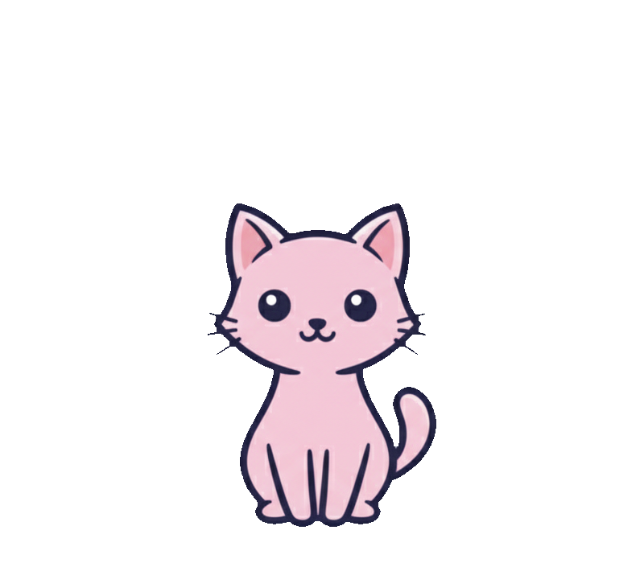
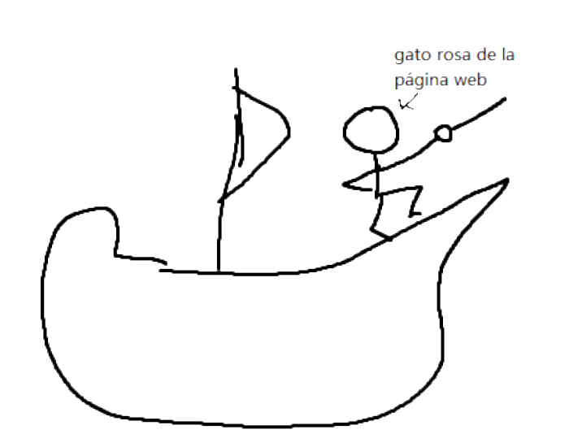
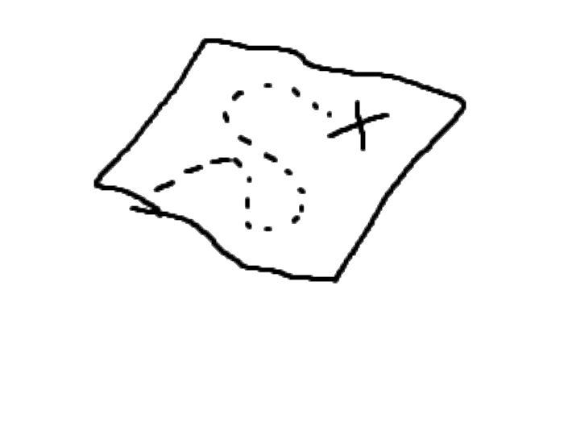
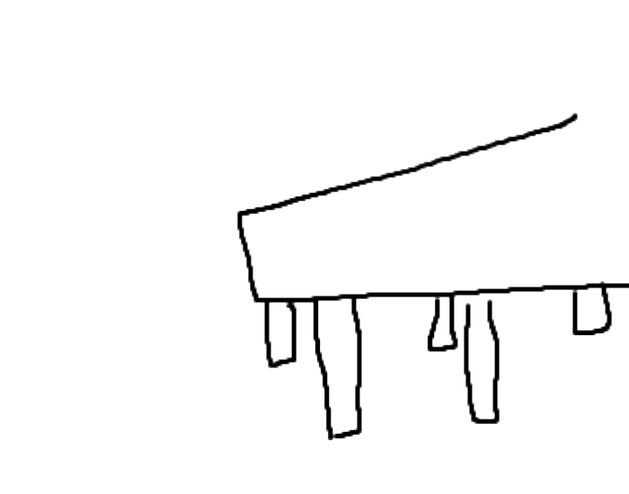
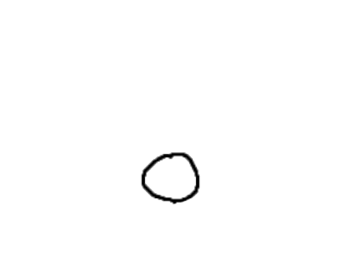

Elige tu nivel:




Es el programa que abres para ir a internet. Si lo cierras, se acaba la navegación.
Ejemplos: Google Chrome, Firefox, Safari, Edge
Aunque son páginas web, su propósito es ayudarte a encontrar otras páginas mediante un índice.
Ejemplos: Google, Bing, DuckDuckGo
El sitio donde vas a consumir o crear algo. Su propósito no es ayudarte a navegar por internet.
Ejemplos: YouTube, Wikipedia, Amazon
Cargando…